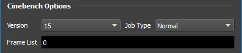
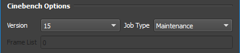
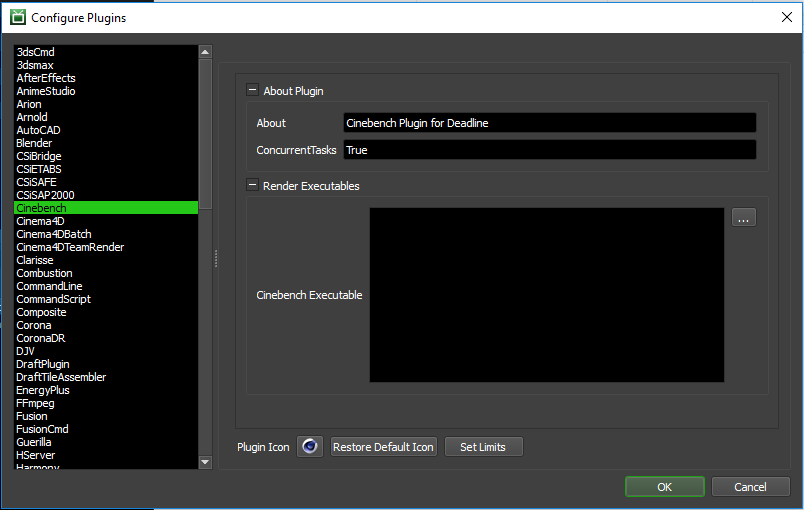

Cinebench¶
Overview¶
To make the best use of your available compute resources for rendering, it can be beneficial to determine which render nodes perform the best and, if any, perform below expectations. By using Deadline in conjunction with MAXON ® Cinebench ®, we can make a good approximation of individual render nodes performance across your farm!
There are two different ways that you can run Cinebench on the render nodes in your farm, a ‘Normal’ job and a ‘Maintenance’ job. Please refer to the Job Submission for information on general submission options.
A ‘Normal’ job is best used when you only wish to benchmark a few render nodes. You specify a frame range equal to the number of render nodes you wish to benchmark, and combine that with Groups or a Machine List to specify which ones to check.
A ‘Maintenance’ job differs in that it’s a special job type that creates a task for each render node in your farm. A render node will also only render one task from this job and leave the job alone afterwards. Using this, you don’t need to specify a frame range or worry about a render node doing the benchmark more than once, or not at all.
Please refer to the Maintenance Jobs documentation for more information.
Job Submission¶
You can submit Cinebench jobs from the Monitor.
Submission Options¶
The general Deadline options are explained in the Job Submission documentation, and the Draft/Integration options are explained in the Draft and Integration documentation.
Cinebench Options
Version: The version of Cinebench to run.
- Job Type:
Maintenance Job: Best used when you want each Worker connected to the repository to run Cinebench exactly once. Will create number of tasks equal to the number of connected Workers, where each Worker only renders one task and drops the job.
Normal Job: Best used when testing only a few Workers. Use in conjunction the Pools, Groups, Machine List, and frame list to hone in on the Workers you wish to test.
Frame List: Only usable when submitting a “Normal” job, this is used to specify how many tasks to create for the Workers.
Cinebench Tests
Run Single Core Test: If Enabled, a single core render test will be run.
Run Multi Core Test: If Enabled, a multi core render test will be run.
Run OpenGL Test: If Enabled, an OpenGL core render test will be run.
Plugin Configuration¶
You can configure the Cinebench plugin settings from the Monitor. While in power user mode, select Tools -> Configure Plugins and select the Cinebench plugin from the list on the left.
Render Executables
Cinebench Executable: The path to the Cinebench executable file used for rendering. Enter alternative paths on separate lines. Different executable paths can be configured for each version installed on your render nodes.
Error Messages And Meanings¶
This is a collection of known Cinebench error messages and their meanings, as well as possible solutions. We want to keep this list as up to date as possible, so if you run into an error message that isn’t listed here, please visit the Thinkbox Help Centre and let us know.
Currently, no error messages have been reported for this plugin.

{kind=link}
{kind=link}